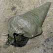

Photo
index of snails on Singapore shores
very large
snails >8cm various
shell shapes and habitats |
|
|

Rodong
Telescopium telescopium |
|
|
| 8-12cm.
Shell with long siphonal canal, in living snail usually obscured by
mud, teardrop-shaped operculum. On muddy shores, especially with seagrasses.
Commonly seen on our Northern shores. |
8-12cm.
Shell with very long siphonal canal, teardrop-shaped operculum. On muddy shores, especially with seagrasses.
Rarely seen, on our Northern shores. |
8-15cm.
Shell conical, heavy. Body black with long proboscis. Commonly seen
in muddy areas in and near mangroves. |
8-15cm,
base diameter. Shell conical, heavy. On boulders, sea walls, jetties,
near good reefs. Sometimes seen on our Southern shores. |
9-10cm.
Shell thin with short spire and large shell opening. Sandy shores
in deeper water. Rarely seen. |
|
|
|
|
|
| 8-12cm.
Shell helmet shaped, smooth, grey without any markings. Sandy areas.
Sometimes seen on some of our shores. |
12-20cm.
Shell thick, yellow or beige with orange, red or brown zig-zag patterns.
Body black with orange spots and long siphon. Sandy areas near seagrasses
and coral rubble. Commonly seen on our Northern shores, sometimes
on our Southern shores. |
5-10cm.
Shell heavy, conical like an ice-cream cone. But some have pointed
tips or are olive-shaped. Shell opening a narrow slit. Reefs, rocky
shores. Live ones rarely seen. HIGHLY
DANGEROUS. Do
not handle. |
15-20cm.
Shell thin, plain orange sometimes with a spiral of brown patterns.
Body dark brown with white stripes, large foot and long siphon. Coral
rubble. Sometimes seen on some of our Northern shores. |
|
|
|
|
|
|
| 8-10cm.
Shell thin with short spire and large shell opening. Shell covered
by two mantle flaps, large foot, long siphon, no operculum in adult.
Burrowing in soft silty sand. Sometimes seen on some of our shores. |
8-9cm,
can reach 15cm. Shell smooth oval to pear-shaped, with lots of dark
spots. Underside white including the 'teeth'. The mantle pattern resembles
tiger stripes. Near living reefs. Rarely seen, on our Southern shores. |
|
10-20cm.
Shell heavy with 6 spines on the outer lip, shell opening is glossy
pink or orange. Coral rubble areas near living reefs. Commonly seen
on our Southern shores. |
20-30cm
long, thick heavy shell with short 'frilly' or leafy spines, usually
white. Rubble and seagrass meadows. Rarely seen. |
|
photo
index of
molluscs on this site
|
|